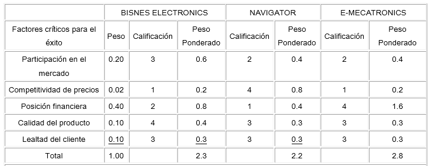
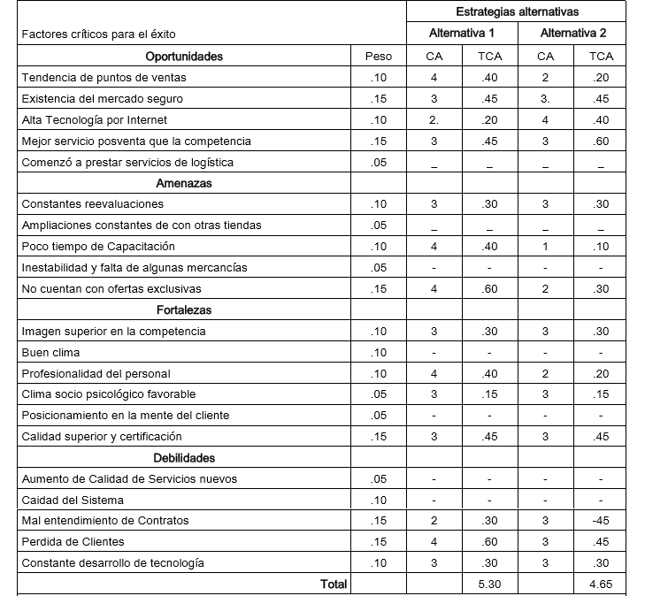

MPC - Matriz de Perfil Competitivo
Segun el material discutido en clase la Matriz del perfil competitivo identifica a los principales competidores de la empresa, así como sus fuerzas y debilidades particulares, en relación con una muestra de la posición estratégica de la empresa. Los pesos y los totales ponderados de una matriz EFI, MPC o una EFE, tienen un significado parecido. Sin embargo, los factores de una MPC, incluyen cuestiones internas y externas, por lo que las calificaciones se refieren a las fuerzas y a las debilidades (David, 2003).
MCPE - Matriz Cuantitativa de Planeación estrategica
Segun el material discutido en clase la Matriz Cuantitativa de Planeación Estrategica representa la etapa de la decisión del marco analítico para formular estrategias. Esta técnica indica, en forma objetiva, cuáles son las mejores estrategias alternativas.
La MCPE usa la información obtenida de los análisis de la etapa de los insumos y los resultados de los análisis de la etapa de adecuación estratégica para "decidir" en forma objetiva cuáles son las mejores estrategias alternativas. Es decir, la matriz EFE, la matriz EFI y la matriz del perfil competitivo que comprenden la fase de insumos, sumadas a la matriz DOFA, el análisis PEYEA, la matriz del BCG, la matriz IE y la matriz de la gran estrategia que constituyen la fase de adecuación, ofrecen la información necesaria para armar una MCPE. Ésta es una herramienta que permite a los estrategas evaluar las estrategias alternativas en forma objetiva, con base en los factores críticos para el éxito, internos y externos, identificados con anterioridad. Como los otros instrumentos analíticos para formular estrategias, la MCPE requiere que se hagan buenos juicios intuitivos (David, 2003).
Ejemplo práctico de una MPC y una MCPE
El siguiente ejemplo se desarrolló en una empresa llamada Bisnes Electronics sistemas integrados, esta empresa se dedica a la comercialización de productos y ofrece servicios tecnológicos e informáticos, a lo largo de su existencia se ha realizado un sin fin de ventas desde un CD, una computadora, elaboración de complejas redes, entre otros. Como resultado de esta basta experiencia se ha producido un gran conocimiento en el tema.
Procedimiento de elaboración de una Matriz de Perfil Competitivo:
-
Seleccionar los competidores.
-
Anotar factores críticos del éxito en los cuales se comparara a las empresas.
-
Asigne un peso entre 0.0 (no importante) a 1.0 (absolutamente importante) a cada uno de los factores. El peso indica la importancia que tiene ese factor para alcanzar el éxito en la industria de la empresa. Los pesos adecuados se pueden determinar comparando a los competidores que tienen éxito con los que no lo tienen o analizando el factor en grupo y llegando a un consenso. La suma de todos los pesos asignados a los factores debe sumar 1.0.
-
Asigne una calificación entre 1 y 4 a cada uno de los factores a efecto de indicar si el factor representa, 4= mayor fuerza, 3= menor fuerza, 2= menor debilidad y 1= mayor debilidad. Las calificaciones se basan en la eficacia de las estrategias de la empresa.
Tabla de la Matriz de Perfil Competitivo de Bisnes Electronics
 Nota: (1) los valores de las calificaciones son los siguientes: 1- menor debilidad, 3- menor fuerza, 4 – mayor fuerza. (2) Como señala el total ponderado de 2.8, el competidor 2 es el más fuerte. (3) En aras de la sencillez sólo se incluye cinco factores críticos para el éxito; pero, tratándose de la realidad, serían muy pocos.Analisis Posterior
En este ejemplo, la "posición financiera" es el factor crítico de mayor importancia para el éxito, como señala el peso de 0.40. La "calidad del producto" de la compañía de la muestra es superior, como lo destaca la calificación de 4 en relación a la competencia; la "posición financiera" del competidor 1 es mala, como lo señala la calificación de 1; el segundo competidor es la empresa más fuerte en general, como lo indica el total ponderado de 2.8.
En cuanto a la interpretación: sólo porque una empresa obtenga una calificación de 2.3 y otra de 2.8 en una matriz del perfil competitivo, no quiere decir que la primera empresa sea 20% mejor que la segunda. Las cifras solo revelan una fuerza relativa de la empresa. El propósito no es obtener una única cifra exacta, sino más bien asimilar y evaluar la información de manera sensata que sirva para tomar decisiones.
Las empresas que no movilicen y faculten a gerentes y empleados para que éstos puedan identificar, vigilar, pronosticar y evaluar las fuerzas externas clave podrían no anticipar las oportunidades y amenazas recientes y, en consecuencia, podrían seguir estrategias ineficaces, dejar pasar oportunidades y propiciar la desorganización.
Una responsabilidad fundamental de los estrategas consiste en encargarse de que se desarrolle un sistema eficaz de auditoria externa. Esto incluye utilizar la tecnología de la información para elaborar un sistema de inteligencia sobre la competencia que funcione adecuadamente.
Procedimiento de elaboración de una Matriz Cuantitativa de Planeación Estrategica:
-
Haga una lista de las oportunidades/amenazas externas y las fuerzas/debilidades internas clave de la empresa que van ubicadas en en la columna izquierda de la MCPE. Esta información se debe obtener directamente de la matriz EFE y la matriz EFI. La MCPE debe incluir cuanto menos diez factores externos críticos para el éxito y diez factores internos críticos para el éxito.
-
Adjudique pesos a cada uno de los factores críticos para el éxito, internos y externos. Estos pesos son idénticos a los de la matriz EFE y la matriz EFI. Los pesos se presentan en una columna contigua, a la derecha, de los factores internos y externos críticos para el éxito.
-
Estudie las matrices (de la adecuación) de la etapa 2 y después identifique las estrategias alternativas cuya aplicación debería considerar la organización. Registre estas estrategias en la hilera superior de la MCPE. De ser posible, agrupe las estrategias en series excluyentes.
-
Determine las calificaciones del atractivo (CA) definidas como valores numéricos que indican el atractivo relativo de cada estrategia dentro de una serie dada de alternativas. Las calificaciones del atractivo se determinan analizando cada factor crítico para el éxito, interno o externo, de uno en uno, formulando la pregunta: "¿Afecta este factor la elección de la estrategia?" Si la respuesta a esta pregunta es Sí, entonces las estrategias se deben comparar en relación con ese factor clave. Concretamente, se debe asignar una calificación del atractivo a cada estrategia para indicar su atractivo relativo en comparación con otras, considerando ese factor particular.
-
Calcule las calificaciones del atractivo total. Las calificaciones del atractivo total se definen como el resultado de multiplicar los pesos (paso 2) por las calificaciones del atractivo (Paso 4) de cada hilera. Las calificaciones del atractivo total indican el atractivo relativo de cada una de las estrategias alternativas, considerando sólo el impacto del factor adyacente crítico para el éxito, interno o externo.
-
Calcule el total de la suma de calificaciones del atractivo. Sumar las calificaciones del atractivo total de cada columna de estrategias de la MCPE. La suma de las calificaciones del atractivo total revela cuál es la estrategia que resulte más atractiva de cada una de las series de alternativas considerando todos los factores relevantes.
Tabla de la Matriz Cuantitativa de Planeación Estrategica de Bisnes Electronics
Alternativa 1: Crear nuevos servicios de Logística Virtual para América latina.
Alternativa 2: Desarrollar un nuevos sistema de Mercadotecnia para mejorar los canales de Distribución de nuestros servicios.
 AS - Calificación del atractivo; TCA - Total de calificaciones del atractivo. Calificación del atractivo: 1 - no aceptable; 2 - posiblemente aceptable; 3 - probablemente aceptable; 4 la más aceptable.Se debe Elegir la Alternativa 1: Crear nuevos servicios de Logística Virtual para Latina América.
@ Informacion sacada del proyecto de investigacion "Proyecto PEA en JB Sistemas Integrados" de la Universidad Galileo de Guatemala, link del documento
Conclusiones
En este ejemplo se puede observar la importancia de estas matrices a la hora de evaluar la posición comercial de la empresa comparándola con empresas del mismo área, el estudio de los factores de éxito permiten observar de una manera más clara y concisa cuales aspectos de la empresa deben abordarse para mejorar su posición en el mercado y que estrategias a diferencia de otras aportarían un mayor beneficio para la organización. En la actualidad el mercado empresarial esta abarrotado de competencia haciendo necesario que se tomen más en cuenta estas herramientas para garantizar una evolución sana de la empresa y evitar quedar así rezagada con respecto a los rivales.